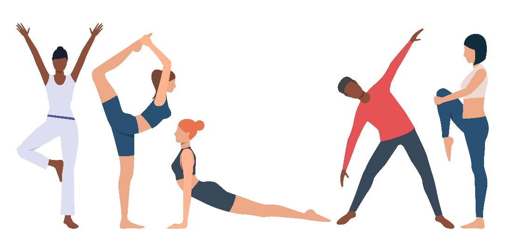

اصول گرم و سرد کردن بدن در تمرین
اصول گرم و سرد کردن بدن در تمرین فواید زیادی دارد که با مطالعه می توان به آنها پی برد و احتمال آسیب دیدگی در عضلات را به حداقل رساند. گرم کردن بدن حتی از دویدن نیز حیاتی تر است و باید به درستی انجام شود. بسیاری از افراد بعد از تمرین احساس سنگینی می کنند یا دچار گرفتگی عضلات شده اند، این افراد یا قبل از تمرین بدن خود را گرم نکرده اند یا این کار را اصولی و درست انجام نداده اند. در هنگام گرم کردن کل عضلات درگیر می شوند و آماده برای انجام حرکات ورزشی هستند.
حال به فوایدی که گرم کردن بر روی بدن و عضلات بدن دارد اشاره می کنیم.
1. به کار افتادن سیستم قلبی و عروقی و به دست آوردن اکسیژن مورد نیاز عضلات
2. افزایش جریان خون بدن
3. افزایش حرارت بدن
4. افزایش قابلیت ارتجاعی عضلات و کاهش خطر آسیب دیدگی
5. کاهش گرفتگی عضلات
6. آماده سازی رباطها، مفاصل و عضلات برای انجام حرکتهای ورزشی خاص
7. آماده سازی روان، تمرکز و ذهن ورزشکارتولید انرژی با ایجاد تعادل در هورمونها و تولید اسیدهای چرب و کربوهیدرات
و فواید سرد کردن بدن پس از تمرین عبارتند از:
1. پاکسازی عناصر مواد زائد بدن در اثر سوخت و ساز عضلات در هنگام ورزش ، مانند: اسید لاکتیک و….
2. کمک به کم شدن درد عضلات بعد از تمرین
3. کاهش خطر سرگیجه و غش کردن در اثر انجام فعالیت های ورزشی سنگین و مانع تجمع خون در سیاه رگ ها
4. کاهش سطح آدرنالین در خون
حرکات اولیه برای گرم کردن بدن
1. دوی درجا: این حرکت همان حالت دویدن است که به مدت 60 ثانیه انجام می شود،فقط ورزشکار این حرکت را در همان جایی که ایستاده است انجام می دهد.
2. پرش: در این حرکت دست و پاها باید باهم هماهنگی داشته باشند. همانطور که صاف ایستاده اید، این حرکت پرشی را به مدت 60 ثانیه به طوری که دستان خود را همراه با حرکات پاها به سمت بالا و پایین تکان دهید و دست ها که در حالت مشت هستند را نباید خیلی سفت کنید. تکرار حرکات پرشی 20 تا 30 بار انجام می شود.
3. خم کردن زانو ها: ابتدا پاها را کمی از هم جدا کنید، بعد از آن دستانتان را به سمت جلو بکشید به طوری که کاملا صاف باشند و بعد پاهای خود را به اندازه 10 سانتیمتر خم می کنید، در حالی که باسن به سمت عقب می رود و دوباره این حرکت را تکرار کنید به مدت 60 ثانیه.
4. تمرین دستان رو هوا: همانطور که پاهایتان را به اندازه عرض شانه باز کرده اید، دستانتان هم به سمت بالای سر حرکت می کند و هر بار یکی از پاها به عقب می روند، در حالی که دو دست خود را بالا می کشید و با همان دستانی که بالای سر قرار دارد به حالت اولیه باز می گردید. تکرار این حرکت سه یا چهار بار به مدت 60 ثانیه انجام می شود.
5. بالا اوردن زانو: در این حرکت دست و پای ورزشکار باید باهم هماهنگ باشد، به این صورت که وقتی پاها با زانوی خم به سمت بالا می آید دست مخالف هم به سمت جلو کشیده می شود. نکته ای که در این حرکت وجود دارد این است که شکمتان را باید به سمت داخل بدهید و خود صاف بایستید و کمرتان نیز صاف باشد. این کار را 60 ثانیه انجام می دهید.
6. خم شدن با پاهای صاف: برای انجام این حرکت پاها باید کاملا صاف و کشیده باشد و نباید خم شود و همانطور که ایستاده اید دست راست پای مخالف را لمس می کنید و با دست چپ پای سمت راست را لمس می کنید. زانو ها نباید خم شوند، در غیر صورت حرکت به درستی انجام نمی شود. 60 ثانیه این حرکت را انجام دهید.
7. چرخش شانه ها: برای انجام این حرکت ساده بدون این که حرکت خاصی انجام دهید، فقط باید شانه های خود را بچرخانید، در حالی که خود صاف ایستاده اید. تکرار این حرکت 10 بار می باشد و زمان آن 60 ثانیه است.
8. ضربه پا به عقب: این حرکت به این گونه می باشد که در حالی که پاهای خود را به اندازه عرض شانه باز کرده اید، با قسمت پاشنه پا به باسن خود ضربه می زنید، یعنی پاها به سمت کمر خم می شوند. مدت زمان انجام این حرکت نیز 60 ثانیه می باشد.
9. حرکت کوهنوردی: روی دستان خود قرار می گیرید. پاها را کاملا صاف کرده و با بدن در یک راستا باشد. به این صورت که دست ها روی زمین قرار می گیرد و فشار بر روی شانه ها می باشد، بعد یکی از پاها را به سمت قفسه سینه حرکت می دهید و بعد پای دیگر را بالا می آورید و همین طور ادامه می دهید. کمر نیز کاملا صاف باشد. این حرکت باید خیلی سریع انجام شود، وقتی هر دوپای خود را به سمت قفسه ی سینه آوردید این یک حرکت محسوب می شود.
انواع حرکات کششی بعد از تمرین
حرکات کششی برای انعطاف بدن و همچنین سرد کردن بسیار کارایی دارد و دارای انواع مختلفی است که شامل:
1. کشش ایستا: این کشش که کمک شایانی به انعطاف پذیری بدن می کند، به این گونه است که عضلات بدن را تا جایی که احساس درد کنیم می کشیم، با انجام تمرین های درست و گوناگون و در همان حالت چند ثانیه قرار می گیریم، مانند باز کردن پاها از یک دیگر. انجام این نوع از حرکات کششی بهتر است که بعد از تمرین و برای سرد کردن بدن انجام شود.
2. کشش PNF : این نوع حرکت به صورت های مختلفی انجام می شود. PNF به حرکاتی گفته می شود که ورزشکار ابتدا در حالت آسوده و ریلکس باعث کشش عضلات خود می شود، مثلا در حالت دراز کش سعی می کند انگشتان دست خود را به انگشتان پاهایش برساند و بعد از آن به حالت انقباض در می آید، بعنی پاهای خود را به سمت بالا پرتاب می کند.
3. کشش پویا: در اجرای برخی از حرکات ورزشی داشتن انعطاف پذیری خیلی مهم است. کشش پویا انعطاف پذیری بدن را بالا می برد،در این کشش حرکات به آرامی و با کنترل اجرا می شود و به صورت تدریجی شدت پیدا می کند، مانند: تاب دادن دست ها از قسمت کتف.
4. کشش بالستیک یا پرتابی: این نوع از حرکات کششی بیشتر در تمرینات آن دسته از ورزشکارانی است که به صورت حرفه ای کار می کنند و شامل حرکاتی می باشد که همراه با پرتاب کردن انجام می شود. حرکات پرتابی کمک زیادی به سفت شدن عضلات بدن می کند.